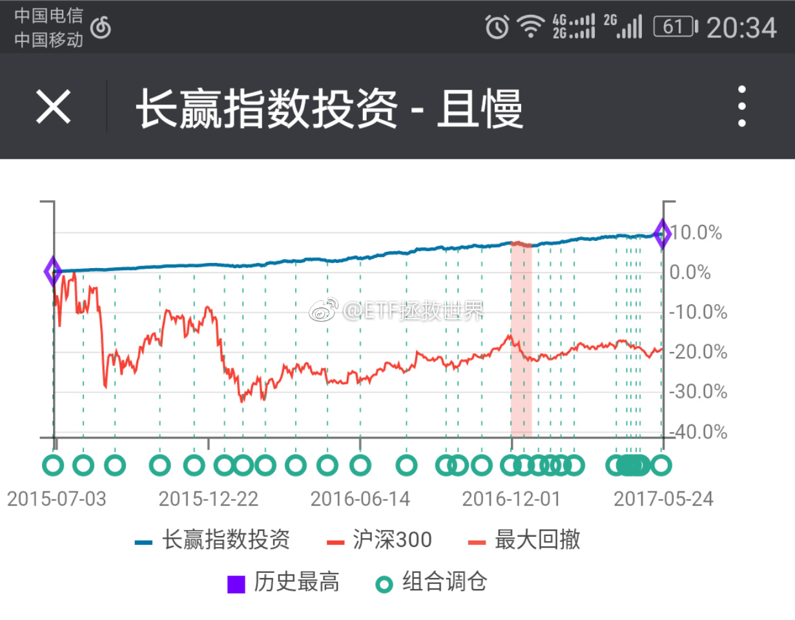
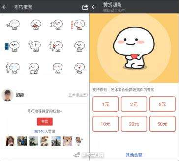

没有意外，连续第三天新高。熊市不可怕。只要做正确的事情，你就可以做到大盘指数在某个地方即使十年不动，你也可以在每次回到原点的时候比上次有更多市值。市场的波动是我们的机会。收集财富的机会。@ETF拯救世界:新高了，醉了。 
各位注意体会一下仓位“舒服”的感觉。如果今天的上涨在买入之前，必然大多数朋友不“舒服”。现在加了几个点的仓后再涨，恐怕大部分朋友感觉相当惬意。咱们来资本市场除了赚钱，还有个心情愉快的问题。吃着火锅唱着歌，把钱赚了，才是最高境界。每天担惊受怕，一会担心被套了，一会担心踏空了，慌慌张张还赔钱，那你来投资其实意义就不是很大。注意，每个人情况不同，时刻让自己保持在“舒服”的区域。舒服了，胜利的概率才大。资本市场和许多地方一样，成功和失败都是会形成习惯的。争取让自己习惯胜利。
继续黑:加速赶顶 //@ETF拯救世界:shit，做为一个A股最大仓位配置在50ETF上的人，天天这么黑50真的好吗。@ETF拯救世界:我再说一个不知道会不会发生的。未来A股的超级大底，恐怕就是最后漂亮50补跌砸出来的。
不要脸。每次发车只有100人打赏你还来分成@网易财经:#网易新闻# 【媒体：苹果向打赏要30%提成 和收保护费有啥区别】最近，苹果更新规则，在苹果终端应用给作者和主播打赏，不能再使用第三方支付，而必须通过苹果应用商店购买，相应平台要提三成。新规影响颇广，微信公众号、今日头条、知乎、映客都在近期调整了打赏设定。媒体：苹果向打赏收"保护费" 封闭终究打不过开放 
表个态：坚定支持刘主席以及zy挤泡沫的决心和行动。也真心跟有些朋友说一句，泡沫不挤，你我会很久很久很久不可能从A股赚钱。只会让大鳄以及重要股东高位套现，把你的血汗钱拿走。市场的归市场，让A股正本清源，估值回到正常位置，大家一起共同迎接真正的长牛大牛，一起发财。
不知道有没有朋友注意过。50和恒生都是我们一年前布局完成的。目前开始高潮。推想一下。现在布局的品种，尤其是开始大量布局的，至少一年后才会开始高潮，也有可能几年。中间有时间差。也就是说，我们提前进入至少一年以后才会成为市场关注点的品种。当别人开始疯狂杀入的时候，我们在考虑何时开始获利了结。然后再进入别人没有注意的品种，然后再等待，然后再了结，周而复始。不断将获利筹码交给追涨的人，不断买入被踩踏的品种。其实赚钱并不那么难。如果你做反了，那可就麻烦了。
回复@弦动我心50455:这是一次下轮牛市的预演。几年后我们手里的每个品种都会像恒生一样，甚至比恒生更快更猛的上涨。先预习一下如何坚定持有吧。坚定持有，并不容易，需要不断的正反馈练习才能做得好一点。//@弦动我心50455:不是e大，我肯定拿不住了@ETF拯救世界:$159920 四个字形容你的感受：我先来：全靠你了
回复@白马拯救世界:有奖竞猜:十年国债到4%，我们的计划会一次收几份债。第一个猜中的获奖。奖品:单价50元以内自己随便选一本书。//@白马拯救世界:报告E大，十年期国债收益率3.7了@ETF拯救世界:新高了，醉了。